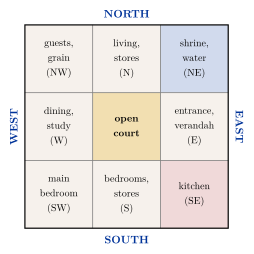
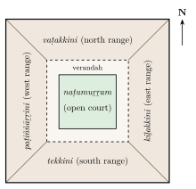

Chapter 10: The House: Residential Vāstu and Vernacular Architecture¶
10.1 The House in the Texts¶
For the authors of the Sanskrit texts, the house (gṛha, veśman, śālā) was the setting of the householder’s religious life: the place of the domestic fire, of the daily offerings, of the rites of passage from birth to death, and of hospitality. The domestic ritual manuals of the Vedic schools, the Gṛhyasūtras, already describe rites for choosing a site, building a house and entering it; the Pāraskara Gṛhyasūtra (3.4), for example, gives the procedure for building a house and for its first occupation. The vāstu texts develop these into a full doctrine of the dwelling: how to choose and test the site (Chapter 2), lay it out on the grid, dimension it, assign its rooms, raise its door and main post, and consecrate it.
10.1.1 Houses by Rank and Caste¶
The texts do not describe a single ideal house but a hierarchy of houses. The Bṛhatsaṃhitā (ch. 53) gives the dimensions of houses for a king, a crown prince, a commander, ministers and others, and then for brāhmaṇas, kṣatriyas, vaiśyas and śūdras, the size diminishing at each step (Bhat 1981). The Mayamata and Mānasāra likewise prescribe the number of storeys, the forms of roof and the ornaments appropriate to each rank and caste (Dagens 1994). Such rules were not merely theoretical. In several regions, caste customs and, in some cases, the orders of rulers restricted the kinds of house that low-ranking castes could build: in Kerala, for example, customary rules long reserved certain house forms and features, such as gatehouses and tiled roofs, for high-caste households. How these rules shaped the village as well as the house is discussed below (Section 10.3).
10.1.2 House Types¶
The southern texts classify houses by the number of ranges (śālā) of rooms built round a central court: houses of one range (ekaśālā), two (dviśālā), three (triśālā) and four (catuḥśālā), with many named variants of each, and larger houses with several courts and storeys (Dagens 1994; Acharya 1934). The four-range house enclosing a courtyard is the type most fully described, and it corresponds to real houses in many regions.
10.1.3 Assigning the Rooms¶
The texts assign rooms and activities to parts of the grid, but they do not agree with each other, and the assignments differ from region to region. Common prescriptions include placing the domestic shrine or the store of grain in favoured positions, keeping the centre of the house open as a court, and placing the kitchen and the fire in a direction associated with Agni or in some other position prescribed by local custom. The plan in Figure 10.1 shows the scheme now most often recommended in popular books on vāstu. It is not found in this form in any classical text; it is a modern synthesis, drawing on the guardians of the directions and on the modern scheme of the five elements described in Chapter 2.

10.1.4 The Door¶
The texts give great importance to the main door. The Bṛhatsaṃhitā predicts the fortunes of the household from the square of the grid in which the door is placed (Chapter 2); the texts also regulate its proportions, its height in relation to the house, the wood of which it is made, and the rite performed when the door-frame is raised. Doors should not be “pierced” by a tree, post or corner directly in front of them, and doors on the same axis should be aligned. In temples, door-frames were carved with several bands (śākhā) of ornament, with the river goddesses Gaṅgā and Yamunā at the base and guardian figures, and an image of Lakṣmī or of the temple’s deity at the centre of the lintel; houses of the wealthy adopted simpler versions of these doorways.
10.1.5 Rites of the House¶
The building of a house was punctuated by rites, as described for temples in Chapter 4: offerings to the vāstupuruṣa, the laying of the first stone or brick, the raising of the main post and the door, and finally the entry into the house (gṛhapraveśa) at an astrologically chosen moment, with a rite of pacification of the site (vāstuśānti). Customs associated with the entry vary by region and community and include the entry of a cow, the boiling over of milk on the new hearth, and the feeding of guests. These rites remain widely observed today.
10.2 Houses of the Past¶
Archaeology shows something of how ordinary people lived before the texts were written. In the Harappan cities, houses of baked brick were built round courtyards, entered from side lanes rather than main streets, with rooms for bathing and, in many cases, a private well and a latrine draining into the street drains; staircases show that many had upper storeys or flat roofs used as living space. In the early historic cities of the Gaṅgā valley, houses of mud brick and baked brick with tiled roofs, ring-wells and soak-pits have been excavated, and the reliefs of Bhārhut, Sāñcī and Amarāvatī show houses and palaces of several storeys with barrel-vaulted roofs, balconies and railings, built largely of timber. The paintings of Ajaṇṭā show palaces with pavilions and courts. These images and remains suggest that the courtyard house, the verandah and the upper-storey balcony have a very long history in South Asia.
10.3 Caste and the Layout of the Village¶
The vāstu texts and the Arthaśāstra assign soils, house sizes and the quarters of a settlement according to varṇa, and place those regarded as impure at its edges (Chapters 1, 2 and 8). These prescriptions had their counterpart in the actual layout of many villages. In much of South India, the main village (Tamil ūr) was occupied by landowning castes, while the hamlets of Dalit communities (the cēri) stood apart, often on lower or poorer land, with their own wells and shrines; in the villages of the North, too, the houses of the lowest castes were commonly placed on the edges. Access to wells, tanks, temple streets and cremation grounds was restricted. These spatial arrangements were enforced by custom and sometimes by violence, and they have proved remarkably persistent. A survey of 565 villages in eleven states, published in 2006, found that the denial of equal access to water sources, temples and other shared spaces persisted in a large proportion of them, and that in many villages Dalit households still lived in separate quarters (Shah et al. 2006). The struggles of the 19th and 20th centuries for the right to use public roads, wells and tanks, such as B. R. Ambedkar’s Mahad Satyagraha of 1927 for access to a public tank, were also struggles over the use of space. Any account of Indian domestic and village architecture that celebrates its harmony with nature should also recognise this aspect of its history.
10.4 Women and the House¶
The house was also the domain of women’s knowledge and art. In many regions women decorate thresholds, courtyards and walls with drawings made of rice flour, chalk, coloured powders or clay: kōlam in Tamil Nadu, raṅgolī in Maharashtra and Gujarat, ālpanā in Bengal, māṇḍaṇā in Rajasthan, aripan in Mithila. Drawn afresh each morning or at festivals, these designs mark the threshold between the house and the street and are associated with auspiciousness and welcome. Women also plastered and re-plastered floors and walls with clay and cow-dung, built and maintained hearths and storage bins, and painted walls for weddings and festivals; the Mithilā paintings now sold on paper grew from this domestic tradition (Chapter 14). In many households, and especially among elite families of the Mughal and Rajput courts and of high castes elsewhere, the house was divided into men’s and women’s quarters, with the women’s quarters (zanāna, antaḥpura) secluded from visitors, and screens, inner courts and roof terraces gave women space and light while limiting their visibility. The architecture of the house thus reflected and reproduced the gender norms of its society.
10.5 Vernacular Architecture¶
Most Indian houses were never built by architects who knew the texts. They were built by their owners and by local masons and carpenters, in local materials, using forms refined over generations to suit climate, available resources, family structure and social custom. This vernacular architecture is as much a part of the Indian building tradition as the temples and palaces (Oliver 1997; Cooper and Dawson 1998). See Table 10.1.
| Region | Type | Principal features |
|---|---|---|
| Kerala | nālukeṭṭu | Four ranges round a small court; timber frame on laterite base; steep tiled roofs with wide eaves |
| Tamil Nadu | agrahāram house; Chettinad house | Row houses with raised front verandah (tiṇṇai) and inner courts; very large merchant houses with sequences of courts |
| Rajasthan, Gujarat | havelī; pol house | Inward-looking courtyard houses of stone or brick and timber; carved façades, balconies (jharokhā) and screens (jālī) |
| Kachchh | bhuṅgā | Circular houses of mud and wattle with conical thatched roofs |
| Maharashtra | wāḍā | Courtyard mansions with high outer walls and timber interiors |
| Bengal | bāṅglā hut | Mud or bamboo walls with curved thatched roofs of two or more slopes (do-cālā, āṭ-cālā) |
| North-east | stilt houses | Bamboo and timber houses raised on posts, with steep thatched roofs |
| Kashmir | dhajjī dīwārī, tāq | Timber-laced masonry, with walls of brick or stone set in timber frames |
| Ladakh | Thick mud-brick walls, flat earth roofs, small openings, south-facing living rooms | |
| Goa | Laterite houses with lime-plastered façades, raised entrance verandahs (balcão) and windows glazed with flat oyster shells |
10.5.1 The Kerala Nālukeṭṭu¶
The nālukeṭṭu (“four blocks”) of Kerala is the regional form of the four-range courtyard house, built for the joint households of landowning families. Four ranges, named after their directions (vaṭakkini, north; kiḻakkini, east; tekkini, south; paṭiññāṟṟini, west), enclose a small open court (naṭumuṟṟam) which admits light and rain (Figure 10.2); larger houses have two or four courts. The house stands on a raised laterite base, has a timber frame and walls of laterite, timber or mud, and is covered by steep, wide-eaved roofs of tiles over a timber structure, designed to shed the heavy monsoon rains and shade the walls. A gatehouse (paṭippura) marks the entrance to the compound, which usually contains a tank or well, a family shrine and groves. The Sanskrit Manuṣyālayacandrikā (16th century) and the living tradition of Kerala carpenters (taccan) regulate its dimensions and joinery.

10.5.2 The Havelī¶
In Rajasthan and Gujarat, and in the old cities of north India, merchants and nobles lived in havelīs: courtyard houses of two to five storeys, often with an outer court for men and visitors and an inner court for the women of the household. The thick walls, small and screened windows, shaded courts and roof terraces respond to the hot, dry climate. The havelīs of Jaisalmer, carved in yellow sandstone, are famous: the Paṭvoṃ kī Havelī, a group of five houses begun in the early 19th century by a merchant family, and the Nathmal kī Havelī (1885), whose façade is said to have been carved by two brothers working on its two halves. In the Shekhawati region the havelīs built by Marwari merchants in the 19th and early 20th centuries are covered with wall paintings that show deities, legends, and novelties of the time such as railway trains and motor cars.
10.5.3 Town Houses of North India¶
In the old cities of north India, such as Delhi, Lucknow, Agra, Varanasi and Ahmadābād, the houses of merchants, officials and nobles were inward-looking courtyard houses, often of several storeys, entered through a single doorway from a narrow lane. Larger mansions had a men’s court for receiving visitors and a separate court for the women of the household (Section 10.4), with roof terraces used for sleeping in the hot season, and basements (tahkhāna) for coolness. Facades were decorated with carved stone or timber balconies, brackets and screens. Many such houses in Old Delhi and other cities have been subdivided, rebuilt or demolished in recent decades, and their conservation is a pressing problem.
10.5.4 The Chettinad House¶
In the Chettinad region of Tamil Nadu, the Nāṭṭukkōṭṭai Cheṭṭiyār bankers and merchants, whose business extended across Burma, Malaya and Ceylon, built very large houses in their home villages in the late 19th and early 20th centuries. A typical house has a raised front verandah (tiṇṇai), a sequence of pillared courts (vaḷavu) surrounded by rooms, and kitchens and service courts at the rear. The houses combine local materials and craftsmanship, including locally made floor tiles and polished lime plaster, with Burmese teak, European glass, tiles and cast iron.
10.5.5 The Wāḍā¶
The wāḍā of Maharashtra is a courtyard house, sometimes fortified, of the Maratha period. The Shaniwār Wāḍā in Pune (built 1730–32), the seat of the Peshwās, was the grandest; it was largely destroyed by fire in 1828, and only its fortified walls and gateways survive. Smaller wāḍās in Pune, Nashik and other towns preserve fine timber courts and carved brackets.
10.5.6 The Houses of Goa¶
Four and a half centuries of Portuguese rule produced in Goa a distinctive house that combines the local courtyard plan with European façades. The large houses built by Catholic and Hindu landowning families, mostly in the 18th and 19th centuries, have thick walls of laterite set in lime mortar and plastered and painted in strong colours, steep roofs of clay tiles on timber frames, and raised plinths reached by flights of steps. Their street fronts are symmetrical, with pilasters, mouldings and tall windows, and the entrance is often through a balcão, a covered porch with built-in seats where the family received visitors and watched the street. Windows were traditionally glazed with thin, translucent squares of the polished windowpane-oyster shell set in wooden lattices, which admit a soft light and keep out the glare. Behind the formal rooms of the front, the reception hall, the chapel or shrine and, in the grandest houses, a ballroom, the house is organised round one or more courtyards, with the kitchen, stores and service rooms at the back, as in houses elsewhere on the west coast. The Goan house shows how a colonial society built in a local material and climate, and how forms from Europe were absorbed into an Indian plan rather than replacing it. Many such houses are now threatened by division among heirs, emigration and the cost of upkeep.
10.5.7 Mountain, Forest and Pastoral Houses¶
Some of the most remarkable vernacular buildings of India belong to communities that lived far from the cities. The Todas, pastoralists of the Nilgiri hills, built barrel-vaulted huts of cane and thatch with a tiny low entrance, and conical dairy-temples of similar materials. In Ladakh, houses of two or three storeys are built of sun-dried brick and stone with flat roofs of earth on poplar beams; the ground floor shelters animals and stores, the family lives above, and the living rooms face south to catch the sun in a cold desert climate. In the North-east, Naga, Khasi, Mizo, Adi and other communities build houses of timber and bamboo, often raised on stilts, with steep thatched roofs; the great communal houses of the Naga villages, with their carved posts, were centres of village life. In the Himalaya of Himachal Pradesh and Uttarakhand, houses and temples of stone and timber, with slate roofs and carved wooden balconies, use the timber-lacing techniques described below.
10.5.8 Bamboo and Timber in the North-east¶
The North-east, with its heavy rainfall, frequent floods and earthquakes, and abundance of bamboo, cane, timber and thatch, has building traditions unlike those of the rest of India. The social institutions housed in these buildings, such as the young men’s houses of the Naga villages, are discussed in Volume 23, Jana–Jāti; here the concern is with how they were built.
Bamboo is used in almost every part of the house. Whole culms serve as posts, beams and rafters; split bamboo is flattened into boards for floors and walls or woven into mats and screens; and the parts are joined not with nails but by lashing with strips of cane or bamboo, by notches and by pegs. Roofs are steep, to shed the rain, and covered with thatch grass or with the leaves of palms such as the tokou palm of Assam. Many houses stand on posts above the ground, which keeps the floor dry and clear of floodwater, insects and animals, ventilates it from below and gives sheltered space beneath for livestock, looms and firewood. The Miśiṅ communities of the Brahmaputra floodplain build long houses of this kind (cāṅ ghar) raised well above the level of the annual floods; in the hills, houses are often built against the slope, with the front on posts and the back on the ground. A hearth near the centre of the main room, with a rack above it for drying and storing grain, meat and firewood, is the focus of domestic life in many hill communities, and its smoke helps to protect the bamboo and thatch above it from insects and decay.
In the plains of Assam, the characteristic house of the colonial and modern periods, the so-called Assam-type house, has a frame of timber posts and beams, walls of ekarā (split bamboo or reed lath plastered with mud or lime on both sides) set between the posts, and a light roof, first of thatch and later of corrugated iron. Its light walls and flexible frame are well suited to a region of strong earthquakes, and it is said to have been widely adopted after the great earthquake of 1897, which destroyed many masonry buildings in Shillong and the Assam valley. Such buildings need regular maintenance: bamboo and thatch decay and are attacked by insects, and roofs must be renewed every few years. Over the last half century concrete, brick and corrugated iron have replaced bamboo in many places, but architects and engineers have also begun to treat bamboo as a modern structural material, preserving it chemically and joining it with bolts and steel connectors.
10.5.9 The Bungalow¶
The word “bungalow” comes from the Bengali bāṅglā, the thatched hut with a curved roof. In the 17th and 18th centuries Europeans in Bengal adopted the form of a single-storey house with a verandah on all sides, and the colonial bungalow, set in its own compound, became the standard residence of officials and planters throughout British India and, later, a type of house found around the world. Anthony King has traced this history (King 1984), which shows how a vernacular Indian form was transformed by colonial needs and returned to India as a symbol of modern, suburban living.
10.5.10 Building with Earth, Bamboo and Timber¶
Much of India’s vernacular architecture is built of earth, in the form of rammed earth, cob, sun-dried brick or wattle and daub, with roofs of thatch, tiles or earth on timber. Bamboo is the principal material of the North-east and of parts of Bengal and the Western Ghats. In earthquake-prone Kashmir and the Himalaya, masonry walls are laced with horizontal timbers or built within timber frames (tāq and dhajjī dīwārī). Randolph Langenbach, who studied these buildings after the Kashmir earthquake of 2005, found that they had often survived better than unreinforced masonry and many concrete-framed buildings, because the timber holds the masonry together and the many joints absorb the energy of the shaking (Langenbach 2007). The circular bhuṅgās of Kachchh have likewise been reported to have withstood the earthquake of 2001 comparatively well, although these reports rest mainly on observations made during relief and rebuilding rather than on systematic engineering surveys. None of this means that any traditional building is “earthquake-proof”; performance depends on the quality of construction and maintenance.
Lime was the most important binding and plastering material of historic Indian masonry. Builders prepared it by burning limestone or shells, slaking the quicklime and mixing it with sand, brick dust and, in many regional recipes, organic additives such as jaggery, the fruit of the myrobalan (Tamil kaḍukkāy) or plant extracts, which modify its setting and water resistance. Polished lime plasters, such as Rajasthani ārāish, achieve a marble-like finish. Lime mortars and plasters have good durability and are compatible with historic masonry, which is why conservation architects use them in repairs; but claims that traditional lime mortars generally match the strength of modern cement are not supported by systematic testing.
10.5.11 Roofs¶
Roofs are among the most regionally distinctive elements of Indian houses. Thatch of grass, palm leaf or straw, laid on bamboo or timber frames, covered most village houses until the 20th century and is still widespread; it is light, cool and cheap but must be renewed frequently. Clay tiles, either half-round “country” tiles or, from the later 19th century, the interlocking “Mangalore” tiles first made by the Basel Mission at Mangalore, cover pitched roofs in the wetter regions. Flat roofs of earth on timber, or of lime concrete on stone slabs, prevail in the dry north-west and in the Deccan, and serve as terraces for sleeping and drying grain. Slate and stone slabs are used in the Himalaya. The shape and material of the roof largely determine the outline of a village, and their replacement by corrugated iron and reinforced concrete has transformed the Indian landscape in the last century.
10.6 Furniture and the Use of Space¶
The vāstu texts include furniture among the kinds of vāstu, and the Mayamata and Mānasāra give rules for the proportions of beds, couches, seats and thrones (Chapter 2). Yet traditional Indian houses contained little furniture by modern standards. People sat on the floor, on mats, carpets and low stools; ate from leaves or plates set on the floor; and slept on mats, mattresses or the light rope-strung bed (cārpāī, khaṭiyā), which could be carried outside to the courtyard or the roof in the hot season. Wall niches, shelves, chests and storage jars held possessions; swings (Tamil ūñcal, Hindi jhūlā) hung in verandahs and halls. Rooms were therefore flexible, used for different purposes at different times of day and year, and the courtyard and roof were as important as the rooms. European furniture spread with colonial rule, first in elite houses, and has changed the use of domestic space profoundly.
10.7 Climate and the Traditional House¶
Many features of traditional Indian houses respond intelligently to climate: courtyards that bring light and air into deep plans and act as reservoirs of cool night air; verandahs, deep eaves and screens that shade walls and openings; thick walls of earth or stone that even out the swing of temperature between day and night in dry regions; light, raised, well-ventilated structures in hot humid regions; and roof terraces for sleeping in the hot season. These features vary with climate: houses in Kerala and in Rajasthan are designed in almost opposite ways. They can be analysed, and used in new buildings, with the methods of building science (Krishan et al. 2001). Several 20th-century Indian architects drew on these lessons in their own work, among them Laurie Baker in Kerala, Charles Correa and B. V. Doshi, whose work, including Doshi’s self-built housing at Aranya, is described in Chapter 7 (Section 7.3).
Traditional knowledge has also been drawn on in rebuilding after disasters. After the Kachchh earthquake of 2001, organisations such as the Hunnarshala Foundation at Bhuj worked with local masons, carpenters and village communities to rebuild houses using improved versions of local techniques, including the circular bhuṅgā and stabilised earth, combined with modern earthquake-resistant features such as ring beams; similar approaches have been tried in the Himalaya. Such projects show that the lessons of vernacular architecture are best applied critically, adapting traditional forms to modern needs and safety standards rather than copying them.
These climatic advantages belong to particular regional forms; they do not depend on following a vāstu scheme of directions. A house built to the popular vāstu plan in Kerala and one built to the same plan in Rajasthan would not be equally well adapted to their climates.
10.8 Vāstu and the Modern House¶
It is in house-building that modern popular vāstu is most visible: builders advertise “vāstu-compliant” apartments, and consultants advise on plots, rooms and furniture. The claims on which this advice rests, and their relation to the classical texts, are examined in Chapter 2 (Section 2.15 and Table 2.3). For the house, the practical point is that where vāstu advice coincides with good design, as in admitting winter sun, excluding the low western sun, providing cross-ventilation and avoiding poorly drained sites, the benefits come from the design principles themselves, which can be justified directly; and that buyers should not be persuaded to demolish sound structures or spend large sums on the strength of claims that have no evidential basis.
10.9 Two Kinds of Knowledge¶
The house is where the two kinds of knowledge discussed in this volume are furthest apart. The classical texts describe a hierarchy of houses, laid out on the grid, dimensioned by astrological calculation, consecrated by ritual and assigned according to rank and caste; the same plan, in principle, served from the Himalaya to the far south. The vernacular houses of India’s regions show a knowledge of a different kind, practical, local and closely adapted to climate, materials and family life, so that the house of Kerala and the house of Rajasthan answer their climates in almost opposite ways. The best of modern Indian architecture, and the best of disaster rebuilding, has drawn on the second kind of knowledge rather than the first.
Further Reading¶
-
Oliver, Paul, ed. 1997. Encyclopedia of Vernacular Architecture of the World. 3 vols. Cambridge University Press.
-
Cooper, Ilay, and Barry Dawson. 1998. Traditional Buildings of India. Thames and Hudson.
-
Krishan, Arvind, Nick Baker, Simos Yannas, and S. V. Szokolay, eds. 2001. Climate Responsive Architecture: A Design Handbook for Energy Efficient Buildings. Tata McGraw-Hill.
-
King, Anthony D. 1984. The Bungalow: The Production of a Global Culture. Routledge and Kegan Paul.
-
Dagens, Bruno. 1994. Mayamatam: Treatise of Housing, Architecture and Iconography. 2 vols. Indira Gandhi National Centre for the Arts and Motilal Banarsidass.
-
Bhat, M. Ramakrishna. 1981. Varāhamihira’s Bṛhat Saṃhitā. 2 vols. Motilal Banarsidass.